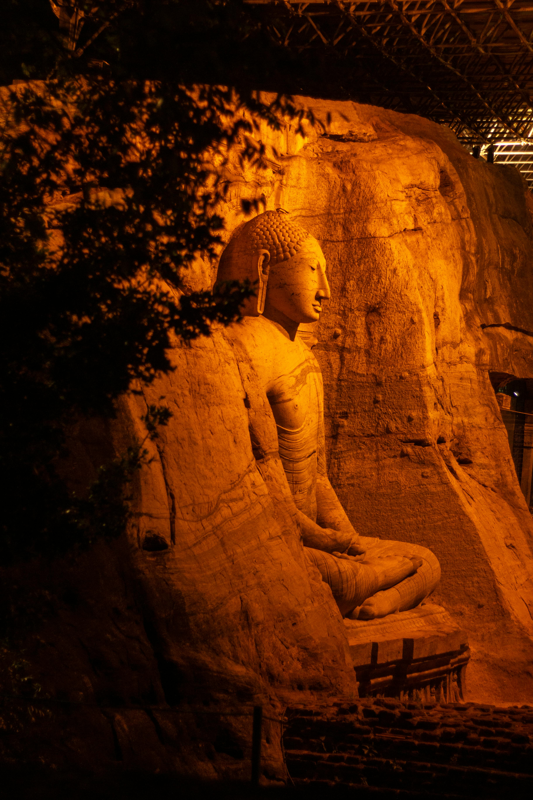

The culture of Sri Lanka mixes modern elements with traditional aspects and is
known for its regional diversity.
Sri Lankan culture has long been influenced by the heritage of Theravada Buddhism and the religion's
legacy is
particularly strong in Sri Lanka below the northern region.
South Indian cultural influences are
especially
pronounced in the northernmost reaches of the country.
The history of colonial occupation has also
left a mark
on Sri Lanka's identity, with Portuguese, Dutch, and British elements having intermingled with various
traditional facets of Sri Lankan culture.
Culturally, Sri Lanka possesses strong links to both India
and
Southeast Asia.[1] For over 5000 years, India and Sri Lanka have nurtured a legacy of historical,
cultural,
religious, spiritual, and linguistic connections.
|  | |
|
The country has a rich artistic tradition, with distinct
|
|
Sri Lanka was first inhabited by Homo sapiens who traversed the
Indian Ocean about 125,000 years ago.Sri Lanka has a documented history of over 3,000
years, mainly due to ancient historic scriptures like Mahawamsa, and with the first stone
objects dating back to 500,000 BCE. Several centuries of intermittent foreign influence
has transformed Sri Lankan culture to its present form. Nevertheless, the ancient traditions
and festivals are still celebrated on the island, together with other minorities that make
up the Sri Lankan identity. |